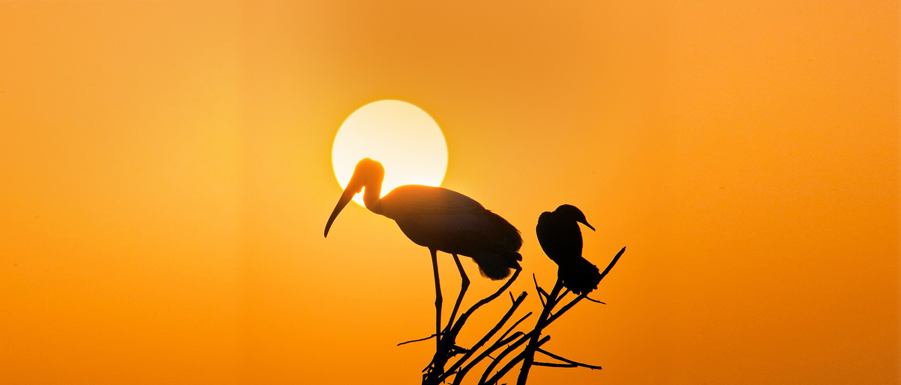

destination

Bharatpur
The history of Bharatpur dates back to 5th century BC, when the Matsya kingdom flourished here. The Matsyas were allies of the Pandavas in the Mahabharata war. Legends say that the origin of the name Bharatpur is traced to Bharat, younger brother of Lord Ram. Laxman, the other brother, was given the most prestigious position as that of the family deity of the ruling family of Bharatpur. His name also appears in the state seals and coat-of-arms.
In the early 18th century, Maharaja Suraj Mal captured the fort of Bharatpur by vanquishing Khemkaran, the rival chieftain and laid the foundation for Bharatpur. The valiant Maharaja was very keen to expand the cities and is credited with building the numerous forts and palaces that dot the kingdom, including the Pleasure Palace Complex at Deeg.
Bharatpur is also home to one of the world's best-known bird watching destinations, Keoladeo Ghana National Park (KNP). 250 years ago, the then ruler built embankments that allowed flooding of this land, turning it into a marsh. Named after the dense jungle that surrounded an old Shiva Temple, this 29 square kilometre man-made wetland is renowned for migratory birds – ducks, geese, waders, raptors, flycatchers and more. In winter, avid birders and ornithologists flock to the park to observe and study the feathered beauties. With more than 370 recorded species, KNP used to also host the Siberian crane. It is a World Heritage Site.